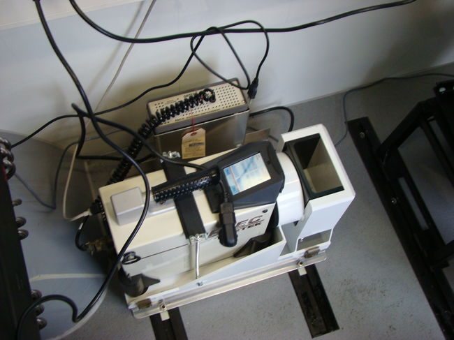
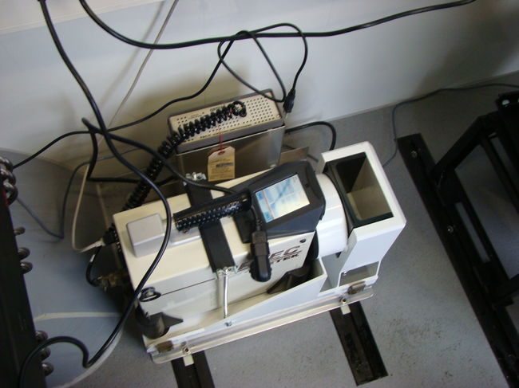

Gammakiirgus õhus
Nii meis endis kui ümbritsevas keskkonnas leidub alati vähesel määral radionukliide ja seega ka ioniseerivat kiirgust, mis annab inimese nn loodusliku kiiritusdoosi. Näiteks annab kosmiline kiirgus aastas 0,3 mSv suuruse doosi, inimkehas sisalduvad radionukliidid umbes 0,2 mSv ning maapinnast ja ehitistest lähtuv kiirgus 0,5 mSv suuruse doosi. Nende doosikomponentidega peab Eestimaal arvestama iga inimene. Eestis on radoonist põhjustatud aastane doos siiski keskmiselt vaid 1 mSv. Looduslikule doosile võib lisanduda meditsiiniprotseduuridel aastas saadav 0,30 mSv suurune doos. Tehisradionukliididest põhjustatud keskmine doos on meil tühiselt väike. Seega on Eesti elanike keskmine kiirguskoormus umbes 2,5 mSv aastas
Nii meis endis kui ümbritsevas keskkonnas leidub alati vähesel määral radionukliide ja seega ka ioniseerivat kiirgust, mis annab inimese nn loodusliku kiiritusdoosi. Näiteks annab kosmiline kiirgus aastas 0,3 mSv suuruse doosi, inimkehas sisalduvad radionukliidid umbes 0,2 mSv ning maapinnast ja ehitistest lähtuv kiirgus 0,5 mSv suuruse doosi. Nende doosikomponentidega peab Eestimaal arvestama iga inimene. Eestis on radoonist põhjustatud aastane doos siiski keskmiselt vaid 1 mSv. Looduslikule doosile võib lisanduda meditsiiniprotseduuridel aastas saadav 0,30 mSv suurune doos. Tehisradionukliididest põhjustatud keskmine doos on meil tühiselt väike. Seega on Eesti elanike keskmine kiirguskoormus umbes 2,5 mSv aastas.
Allikas: Keskkonnaamet
 
